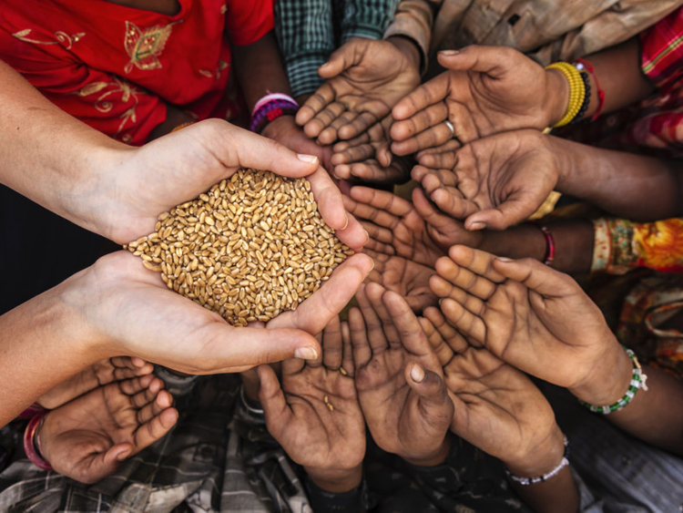

مشروع شامل لـ القرض الحسن لصغار المنتجين والفقراء الناشطين إقتصادياً

عن المشروع
مشروع شامل للقرض الحسن لصغار المنتجين والفقراء الناشطين إقتصادياً هو أحد محاور البرنامج الشامل لـ الأمان الإجتماعي لمعالجة الفقر متعدد الأبعاد وذلك لتمكين لصغار المنتجين والفقراء الناشطين إقتصادياً من الحصول على التمويل بطرق ميسرة ومن غير أرباح عبر فروع المصارف المشاركة في المشروع, يغطي المشروع كل ولايات السودان
شركاء التنفيذ
مفوضية الأمان الإجتماعي والتكافل وخفض الفقر.
ديوان الزكاة.
مصرف الإدخار والتنمية الإجتماعية.
بنك الأسرة.
وزارات التنمية الإجتماعية بولايات السودان المختلفة.
أهداف المشروع
تخفيف حدة الفقر.
تفعيل شبكات الأمان المنتجة.
توفير فرص وزيادة الدخل للمستهدفين.
بناء القدرات وتوفير فرص التدريب.
زيادة ثقافة التعامل مع المصارف.
الأسس والمعايير للشرائح المستهدفة بتمويل القرض الحسن
الفقراء الناشطين إقتصادياً.
الأرامل والمطلقات كافلات الأيتام في المدارس والجامعات الحكومية ( أساس / ثانوي / جامعات ).
بائعات الأطعمة والأغذية والباعة المتجولون .
أصحاب الأعمال الحرة الصغير كالحرفين والنجارين والحدادين والمزارعين والرعاة.
العمال ذوي الدخل المحدود بمعيار الحد الأدنى للأجور.
لامانع لتقديم التمويل للأفراد والمجموعات التي تنطبق عليها الشروط أعلاه *
المستندات_المطلوبة
الأوراق الثبوتية (الرقم الوطني، بطاقة شخصية سارية المفعول ).
دراسة جدوى للمشروع.
دراسة حالة لمقدم الطلب.
أن يتم التمويل لمستفيد واحد في الأسرة الواحدة .
أن يتم إرفاق المستندات التي تثبت ذلك (شروط التمويل المذكورة في أولاً).